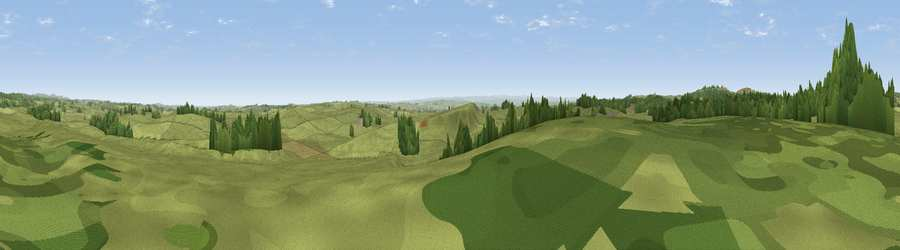

Viewpoint near Kirkwhelpington
#26623 in England · top 62% of its area beats it · near KirkwhelpingtonThe view, rendered

A 360° render of this exact spot computed from the terrain model, tree cover and land cover — summer colours, afternoon light, calibrated against photographs of famous viewpoints. Real trees, hedges and buildings will differ in detail.
The panorama
Grey silhouette: terrain skyline in each direction (720 bearings, Earth curvature and refraction included). Dashed green: skyline with trees (+15 m) and buildings (+8 m) as obstacles. Blue strip: how far the ground is visible on each bearing.
Where the view opens
Wedge length = distance to the farthest visible ground on that bearing (vegetation-aware). Rings at 10, 25 and 50 km.
What fills the view
88% grassland · 10% woodland · 1% cropland
Angular shares of the visible panorama (visual magnitude), not map area. Landscape diversity 0.19 (0–1 Shannon).
Key numbers
More beautiful places nearby
The staircase of upgrades: each row has a higher view potential than everything closer. Driving times are estimates from straight-line distance, calibrated against real road routing — check an actual route before setting out.
| Place | Direction | Drive | Score |
|---|---|---|---|
| Viewpoint near Kirkwhelpington | NNW · 4 km | ~8 min | 54.9 |
| Viewpoint near Kirkwhelpington | N · 4 km | ~10 min | 61.0 |
| Viewpoint near West Woodburn | WNW · 4 km | ~10 min | 73.4 |
| Darden Rigg | N · 14 km | ~26 min | 77.0 |
| Viewpoint near Thropton | NNE · 17 km | ~30 min | 81.8 |
| Viewpoint near Hepple | NNE · 18 km | ~31 min | 82.4 |
| Viewpoint c12273_7856 | N · 31 km | ~49 min | 83.7 |
| Viewpoint c12396_7887 | N · 38 km | ~56 min | 85.7 |
55.13482, -2.05997 · source: screening · position refined by local search. Computed location — check access rights before visiting.